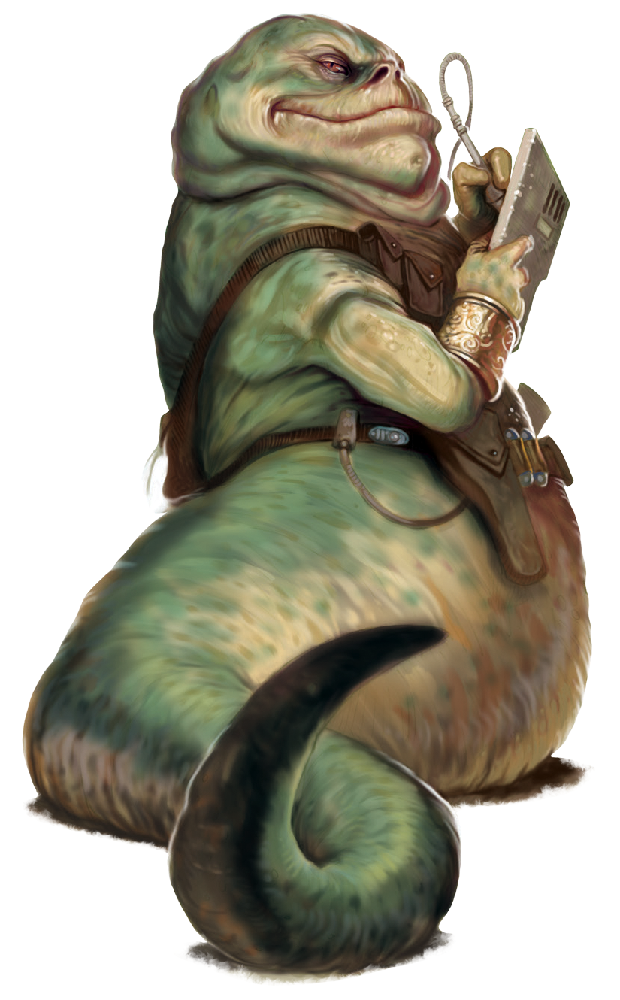

Hutt
hutt
Special Abilities: Hutts begin the game with one rank in the Enduring talent and one rank in the Nobody's Fool talent . Hutts begin the game with one rank in Coercion or Discipline. They still may not train Coercion or Discipline above rank 2 during character creation.
Ponderous: A Hutt can never spend more than one maneuver moving per turn.
Hutts are large, long-lived gastropods with remarkable physical and mental strength. They are slug-like, lacking legs and, as they gain their adult size, move only slowly. Although the most infamous Hutts in the galaxy tend to be gangsters and crime lords, Hutts can be found in nearly any profession. The following rules outline the creation of a character who is a young adult Hutt, only one or two centuries old.
As they age, Hutts continue to grow larger and, if wealthy and powerful, more corpulent. Since Hutts can live for over one thousand years, the oldest and most powerful Hutts are very massive indeed. Even a comparatively young and vigorous Hutt has a flexible, muscular torso some two or three meters in length, topped by a broad head with two enormous eyes and a cavernous mouth. Compared to the rest of their bodies, Hutt arms seem stubby and short, although they are still powerful in their own right.
Hutt society revolves around clan politics, with Hutts of the same family expected to work to advance the status of the clan as a whole. Loyalty is important, as is taking vengeance for any slight. Due to their long lifespans, Hutts tend to be patient and are comfortable taking a long-game approach to most matters. Most Hutts do not particularly value the lives or freedom of nonHutt life forms, and the Hutt species maintains several “lesser” species in a state of near-universal bondage. Of course, some individual Hutts defy these stereotypes.
Most Hutt clans maintain family organizations called kajidics. To an outsider, there may seem to be no difference between a kajidic and a clan...and there may also seem to be no difference between a kajidic and a criminal empire. Indeed, many kajidics are heavily involved in the slave trade, spice trafficking, and other forms of interstellar crime; the Hutts’ reputation as ruthless gangsters is mostly well deserved. A Hutt who does not join the family kajidic is an outcast. He has no proper place in Hutt society, and other Hutts have no idea how to relate to him.
Although originally from the world of Varl, the Hutts have long since claimed a new homeworld: Nal Hutta, whose name means “Glorious Jewel” in Huttese. Nal Hutta is mostly a polluted, swampy wasteland, of little interest to anyone but the Hutts. However, Nal Hutta’s fifth moon, Nar Shaddaa, is a major spaceport and trade hub.
The Hutt language, Huttese, is spoken by sentient beings throughout the galaxy. It is a major trade language whose universality rivals Galactic Basic, especially in the Outer Rim and Hutt Space. Hutts are perfectly capable of learning to speak Basic, or almost any other language, but some Hutts choose not to (or choose to pretend not to) as a means of establishing their dominance. Many Hutts use translators, either droids or “servants.”
Mature, wealthy Hutts avoid physical labor as a matter of status, but younger Hutts still eager to make a name for themselves sometimes excel as warriors, where their great physical strength is an asset. Natural schemers and negotiators, Hutts make effective merchants, politicians, and, of course, criminals. Hutt obligations tend to involve either links to their home clan, or their reasons for parting ways with that clan.
For an ambitious young Hutt looking to get ahead in the galaxy, the Hutts’ long lifespan is both a blessing and a curse. On the one hand, it means that the Hutt has plenty of time for plans to come to fruition. On the other hand, it means that all the senior positions within the kajidic are occupied by elder Hutts who could take a millennium to finally die and present a chance for advancement.
Hutts tend to be patient, but there are limits. A Hutt with no opportunity to advance within his own kajidic may strike out on his own. Some truly go freelance, turning their back on the family business, but most are just looking for an opportunity to prove themselves to their elders. Where a promising kajidic position doesn’t exist, an ambitious Hutt may have to set out to create one. And once that position is created, well, then that Hutt would be the natural choice to fill it, wouldn’t he?